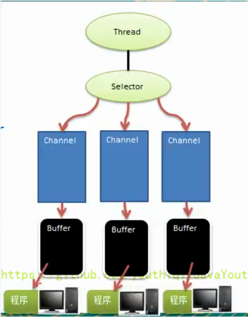

1. Netty简介
1.1. Netty 的介绍
Netty是由JBOSS提供的一个Java开源框架，现为Github上的独立项目。Netty是一个异步的、基于事件驱动的网络应用框架，用以快速开发高性能、高可靠性的网络IO程序。Netty主要针对在TCP协议下，面向Client端的高并发应用，或者Peer-to-Peer场景下的大量数据持续传输的应用。Netty本质是一个NIO框架，适用于服务器通讯相关的多种应用场景。- 要透彻理解
Netty，需要先学习NIO，这样我们才能阅读Netty的源码。
相对简单的一个体系图
1.2. Netty 的应用场景
1.2.1. 互联网行业
- 互联网行业：在分布式系统中，各个节点之间需要远程服务调用，高性能的
RPC框架必不可少，Netty作为异步高性能的通信框架，往往作为基础通信组件被这些RPC框架使用。 - 典型的应用有：阿里分布式服务框架
Dubbo的RPC框 架使用Dubbo协议进行节点间通信，Dubbo协议默认使用Netty作为基础通信组件，用于实现各进程节点之间的内部通信。
1.2.2. 游戏行业
- 无论是手游服务端还是大型的网络游戏，
Java语言得到了越来越广泛的应用。 Netty作为高性能的基础通信组件，提供了TCP/UDP和HTTP协议栈，方便定制和开发私有协议栈，账号登录服务器。- 地图服务器之间可以方便的通过
Netty进行高性能的通信。
1.2.3. 大数据领域
- 经典的
Hadoop的高性能通信和序列化组件Avro的RPC框架，默认采用Netty进行跨界点通信。 - 它的
NettyService基于Netty框架二次封装实现。
2. Java BIO编程
2.1. I/O 模型
I/O模型简单的理解：就是用什么样的通道进行数据的发送和接收，很大程度上决定了程序通信的性能。Java共支持3种网络编程模型I/O模式：BIO、NIO、AIO。Java BIO：同步并阻塞（传统阻塞型），服务器实现模式为一个连接一个线程，即客户端有连接请求时服务器端就需要启动一个线程进行处理，如果这个连接不做任何事情会造成不必要的线程开销。【简单示意图】

Java NIO：同步非阻塞，服务器实现模式为一个线程处理多个请求（连接），即客户端发送的连接请求都会注册到多路复用器上，多路复用器轮询到连接有I/O请求就进行处理。【简单示意图】
Java AIO(NIO.2)：异步非阻塞，AIO引入异步通道的概念，采用了Proactor模式，简化了程序编写，有效的请求才启动线程，它的特点是先由操作系统完成后才通知服务端程序启动线程去处理，一般适用于连接数较多且连接时间较长的应用。
2.2. BIO、NIO、AIO 使用场景分析
BIO方式适用于连接数目比较小且固定的架构，这种方式对服务器资源要求比较高，并发局限于应用中，JDK1.4以前的唯一选择，但程序简单易理解。NIO方式适用于连接数目多且连接比较短（轻操作）的架构，比如聊天服务器，弹幕系统，服务器间通讯等。编程比较复杂，JDK1.4开始支持。AIO方式使用于连接数目多且连接比较长（重操作）的架构，比如相册服务器，充分调用OS参与并发操作，编程比较复杂，JDK7开始支持。
2.3. Java BIO 基本介绍
Java BIO就是传统的Java I/O编程，其相关的类和接口在java.io。BIO(BlockingI/O)：同步阻塞，服务器实现模式为一个连接一个线程，即客户端有连接请求时服务器端就需要启动一个线程进行处理，如果这个连接不做任何事情会造成不必要的线程开销，可以通过线程池机制改善（实现多个客户连接服务器）。【后有应用实例】BIO方式适用于连接数目比较小且固定的架构，这种方式对服务器资源要求比较高，并发局限于应用中，JDK1.4以前的唯一选择，程序简单易理解。
2.4. Java BIO 工作机制
对 BIO 编程流程的梳理
- 服务器端启动一个
ServerSocket。 - 客户端启动
Socket对服务器进行通信，默认情况下服务器端需要对每个客户建立一个线程与之通讯。 - 客户端发出请求后，先咨询服务器是否有线程响应，如果没有则会等待，或者被拒绝。
- 如果有响应，客户端线程会等待请求结束后，再继续执行。
2.5. Java BIO 应用实例
实例说明：
- 使用
BIO模型编写一个服务器端，监听6666端口，当有客户端连接时，就启动一个线程与之通讯。 - 要求使用线程池机制改善，可以连接多个客户端。
- 服务器端可以接收客户端发送的数据（
telnet方式即可）。 - 代码演示：
package com.atguigu.bio;
import java.io.InputStream;
import java.net.ServerSocket;
import java.net.Socket;
import java.util.concurrent.ExecutorService;
import java.util.concurrent.Executors;
public class BIOServer {
public static void main(String[] args) throws Exception {
//线程池机制
//思路
//1. 创建一个线程池
//2. 如果有客户端连接，就创建一个线程，与之通讯(单独写一个方法)
ExecutorService newCachedThreadPool = Executors.newCachedThreadPool();
//创建ServerSocket
ServerSocket serverSocket = new ServerSocket(6666);
System.out.println("服务器启动了");
while (true) {
System.out.println("线程信息id = " + Thread.currentThread().getId() + "名字 = " + Thread.currentThread().getName());
//监听，等待客户端连接
System.out.println("等待连接....");
//会阻塞在accept()
final Socket socket = serverSocket.accept();
System.out.println("连接到一个客户端");
//就创建一个线程，与之通讯(单独写一个方法)
newCachedThreadPool.execute(new Runnable() {
public void run() {//我们重写
//可以和客户端通讯
handler(socket);
}
});
}
}
//编写一个handler方法，和客户端通讯
public static void handler(Socket socket) {
try {
System.out.println("线程信息id = " + Thread.currentThread().getId() + "名字 = " + Thread.currentThread().getName());
byte[] bytes = new byte[1024];
//通过socket获取输入流
InputStream inputStream = socket.getInputStream();
//循环的读取客户端发送的数据
while (true) {
System.out.println("线程信息id = " + Thread.currentThread().getId() + "名字 = " + Thread.currentThread().getName());
System.out.println("read....");
int read = inputStream.read(bytes);
if (read != -1) {
System.out.println(new String(bytes, 0, read));//输出客户端发送的数据
} else {
break;
}
}
} catch (Exception e) {
e.printStackTrace();
} finally {
System.out.println("关闭和client的连接");
try {
socket.close();
} catch (Exception e) {
e.printStackTrace();
}
}
}
}
2.6. 问题分析
- 每个请求都需要创建独立的线程，与对应的客户端进行数据
Read，业务处理，数据Write。 - 当并发数较大时，需要创建大量线程来处理连接，系统资源占用较大。
- 连接建立后，如果当前线程暂时没有数据可读，则线程就阻塞在
Read操作上，造成线程资源浪费。
3. Java NIO编程
3.1. Java NIO 基本介绍
Java NIO全称Java non-blocking IO，是指JDK提供的新API。从JDK1.4开始，Java提供了一系列改进的输入/输出的新特性，被统称为NIO（即NewIO），是同步非阻塞的。NIO相关类都被放在java.nio包及子包下，并且对原java.io包中的很多类进行改写。【基本案例】NIO有三大核心部分：Channel（通道）、Buffer（缓冲区）、Selector（选择器） 。NIO是面向缓冲区，或者面向块编程的。数据读取到一个它稍后处理的缓冲区，需要时可在缓冲区中前后移动，这就增加了处理过程中的灵活性，使用它可以提供非阻塞式的高伸缩性网络。Java NIO的非阻塞模式，使一个线程从某通道发送请求或者读取数据，但是它仅能得到目前可用的数据，如果目前没有数据可用时，就什么都不会获取，而不是保持线程阻塞，所以直至数据变的可以读取之前，该线程可以继续做其他的事情。非阻塞写也是如此，一个线程请求写入一些数据到某通道，但不需要等待它完全写入，这个线程同时可以去做别的事情。【后面有案例说明】- 通俗理解：
NIO是可以做到用一个线程来处理多个操作的。假设有10000个请求过来,根据实际情况，可以分配50或者100个线程来处理。不像之前的阻塞IO那样，非得分配10000个。 HTTP 2.0使用了多路复用的技术，做到同一个连接并发处理多个请求，而且并发请求的数量比HTTP 1.1大了好几个数量级。- 案例说明
NIO的Buffer
package com.atguigu.nio;
import java.nio.IntBuffer;
public class BasicBuffer {
public static void main(String[] args) {
//举例说明 Buffer 的使用(简单说明)
//创建一个 Buffer，大小为 5，即可以存放 5 个 int
IntBuffer intBuffer = IntBuffer.allocate(5);
//向buffer存放数据
//intBuffer.put(10);
//intBuffer.put(11);
//intBuffer.put(12);
//intBuffer.put(13);
//intBuffer.put(14);
for (int i = 0; i < intBuffer.capacity(); i++) {
intBuffer.put(i * 2);
}
//如何从 buffer 读取数据
//将 buffer 转换，读写切换(!!!)
intBuffer.flip();
while (intBuffer.hasRemaining()) {
System.out.println(intBuffer.get());
}
}
}
3.2. NIO 和 BIO 的比较
BIO以流的方式处理数据，而NIO以块的方式处理数据，块I/O的效率比流I/O高很多。BIO是阻塞的，NIO则是非阻塞的。BIO基于字节流和字符流进行操作，而NIO基于Channel（通道）和Buffer（缓冲区）进行操作，数据总是从通道读取到缓冲区中，或者从缓冲区写入到通道中。Selector（选择器）用于监听多个通道的事件（比如：连接请求，数据到达等），因此使用单个线程就可以监听多个客户端通道。- Buffer和Channel之间的数据流向是双向的
3.3. NIO 三大核心原理示意图
一张图描述 NIO 的 Selector、Channel 和 Buffer 的关系。
3.3.1. Selector、Channel 和 Buffer 关系图（简单版）
关系图的说明:

- 每个
Channel都会对应一个Buffer。 Selector对应一个线程，一个线程对应多个Channel（连接）。- 该图反应了有三个
Channel注册到该Selector//程序 - 程序切换到哪个
Channel是由事件决定的，Event就是一个重要的概念。 Selector会根据不同的事件，在各个通道上切换。Buffer就是一个内存块，底层是有一个数组。- 数据的读取写入是通过
Buffer，这个和BIO是不同的，BIO中要么是输入流，或者是输出流，不能双向，但是NIO的Buffer是可以读也可以写，需要flip方法切换Channel是双向的，可以返回底层操作系统的情况，比如Linux，底层的操作系统通道就是双向的。
3.4. 缓冲区（Buffer）
3.4.1. 基本介绍
缓冲区（Buffer）：缓冲区本质上是一个可以读写数据的内存块，可以理解成是一个容器对象（含数组），该对象提供了一组方法，可以更轻松地使用内存块，，缓冲区对象内置了一些机制，能够跟踪和记录缓冲区的状态变化情况。Channel 提供从文件、网络读取数据的渠道，但是读取或写入的数据都必须经由 Buffer，如图:【后面举例说明】
3.4.2. Buffer 类及其子类
- 在
NIO中，Buffer是一个顶层父类，它是一个抽象类，类的层级关系图：

Buffer类定义了所有的缓冲区都具有的四个属性来提供关于其所包含的数据元素的信息：
Buffer类相关方法一览

3.4.3. ByteBuffer
从前面可以看出对于 Java 中的基本数据类型（boolean 除外），都有一个 Buffer 类型与之相对应，最常用的自然是 ByteBuffer 类（二进制数据），该类的主要方法如下：
3.5. 通道（Channel）
3.5.1. 基本介绍
NIO的通道类似于流，但有些区别如下：- 通道可以同时进行读写，而流只能读或者只能写
- 通道可以实现异步读写数据
- 通道可以从缓冲读数据，也可以写数据到缓冲:
BIO中的Stream是单向的，例如FileInputStream对象只能进行读取数据的操作，而NIO中的通道（Channel）是双向的，可以读操作，也可以写操作。Channel在NIO中是一个接口public interface Channel extends Closeable{}- 常用的
Channel类有：FileChannel、DatagramChannel、ServerSocketChannel和SocketChannel。【ServerSocketChanne类似ServerSocket、SocketChannel类似Socket】 FileChannel用于文件的数据读写，DatagramChannel用于UDP的数据读写，ServerSocketChannel和SocketChannel用于TCP的数据读写。- 图示
3.5.2. FileChannel 类
FileChannel 主要用来对本地文件进行 IO 操作，常见的方法有
public int read(ByteBuffer dst)，从通道读取数据并放到缓冲区中public int write(ByteBuffer src)，把缓冲区的数据写到通道中public long transferFrom(ReadableByteChannel src, long position, long count)，从目标通道中复制数据到当前通道public long transferTo(long position, long count, WritableByteChannel target)，把数据从当前通道复制给目标通道
3.5.3. 应用实例1 - 本地文件写数据
实例要求：
- 使用前面学习后的
ByteBuffer（缓冲）和FileChannel（通道），将 "hello,尚硅谷" 写入到file01.txt中 - 文件不存在就创建
- 代码演示
package com.atguigu.nio;
import java.io.FileOutputStream;
import java.nio.ByteBuffer;
import java.nio.channels.FileChannel;
public class NIOFileChannel01 {
public static void main(String[] args) throws Exception {
String str = "hello,尚硅谷";
//创建一个输出流 -> channel
FileOutputStream fileOutputStream = new FileOutputStream("d:\\file01.txt");
//通过 fileOutputStream 获取对应的 FileChannel
//这个 fileChannel 真实类型是 FileChannelImpl
FileChannel fileChannel = fileOutputStream.getChannel();
//创建一个缓冲区 ByteBuffer
ByteBuffer byteBuffer = ByteBuffer.allocate(1024);
//将 str 放入 byteBuffer
byteBuffer.put(str.getBytes());
//对 byteBuffer 进行 flip
byteBuffer.flip();
//将 byteBuffer 数据写入到 fileChannel
fileChannel.write(byteBuffer);
fileOutputStream.close();
}
}
3.5.4. 应用实例2 - 本地文件读数据
实例要求：
- 使用前面学习后的
ByteBuffer（缓冲）和FileChannel（通道），将file01.txt中的数据读入到程序，并显示在控制台屏幕 - 假定文件已经存在
- 代码演示
package com.atguigu.nio;
import java.io.File;
import java.io.FileInputStream;
import java.nio.ByteBuffer;
import java.nio.channels.FileChannel;
public class NIOFileChannel02 {
public static void main(String[] args) throws Exception {
//创建文件的输入流
File file = new File("d:\\file01.txt");
FileInputStream fileInputStream = new FileInputStream(file);
//通过 fileInputStream 获取对应的 FileChannel -> 实际类型 FileChannelImpl
FileChannel fileChannel = fileInputStream.getChannel();
//创建缓冲区
ByteBuffer byteBuffer = ByteBuffer.allocate((int)file.length());
//将通道的数据读入到 Buffer
fileChannel.read(byteBuffer);
//将 byteBuffer 的字节数据转成 String
System.out.println(new String(byteBuffer.array()));
fileInputStream.close();
}
}
3.5.5. 应用实例3 - 使用一个 Buffer 完成文件读取、写入
实例要求：
- 使用
FileChannel（通道）和方法read、write，完成文件的拷贝 - 拷贝一个文本文件
1.txt，放在项目下即可 - 代码演示
package com.atguigu.nio;
import java.io.FileInputStream;
import java.io.FileOutputStream;
import java.nio.ByteBuffer;
import java.nio.channels.FileChannel;
public class NIOFileChannel03 {
public static void main(String[] args) throws Exception {
FileInputStream fileInputStream = new FileInputStream("1.txt");
FileChannel fileChannel01 = fileInputStream.getChannel();
FileOutputStream fileOutputStream = new FileOutputStream("2.txt");
FileChannel fileChannel02 = fileOutputStream.getChannel();
ByteBuffer byteBuffer = ByteBuffer.allocate(512);
while (true) { //循环读取
//这里有一个重要的操作，一定不要忘了
/*
public final Buffer clear() {
position = 0;
limit = capacity;
mark = -1;
return this;
}
*/
byteBuffer.clear(); //清空 buffer
int read = fileChannel01.read(byteBuffer);
System.out.println("read = " + read);
if (read == -1) { //表示读完
break;
}
//将 buffer 中的数据写入到 fileChannel02--2.txt
byteBuffer.flip();
fileChannel02.write(byteBuffer);
}
//关闭相关的流
fileInputStream.close();
fileOutputStream.close();
}
}
3.5.6. 应用实例4 - 拷贝文件 transferFrom 方法
- 实例要求：
- 使用
FileChannel（通道）和方法transferFrom，完成文件的拷贝 - 拷贝一张图片
- 代码演示
package com.atguigu.nio;
import java.io.FileInputStream;
import java.io.FileOutputStream;
import java.nio.channels.FileChannel;
public class NIOFileChannel04 {
public static void main(String[] args) throws Exception {
//创建相关流
FileInputStream fileInputStream = new FileInputStream("d:\\a.jpg");
FileOutputStream fileOutputStream = new FileOutputStream("d:\\a2.jpg");
//获取各个流对应的 FileChannel
FileChannel sourceCh = fileInputStream.getChannel();
FileChannel destCh = fileOutputStream.getChannel();
//使用 transferForm 完成拷贝
destCh.transferFrom(sourceCh, 0, sourceCh.size());
//关闭相关通道和流
sourceCh.close();
destCh.close();
fileInputStream.close();
fileOutputStream.close();
}
}
3.5.7. 关于 Buffer 和 Channel 的注意事项和细节
ByteBuffer支持类型化的put和get，put放入的是什么数据类型，get就应该使用相应的数据类型来取出，否则可能有BufferUnderflowException异常。【举例说明】
package com.atguigu.nio;
import java.nio.ByteBuffer;
public class NIOByteBufferPutGet {
public static void main(String[] args) {
//创建一个 Buffer
ByteBuffer buffer = ByteBuffer.allocate(64);
//类型化方式放入数据
buffer.putInt(100);
buffer.putLong(9);
buffer.putChar('尚');
buffer.putShort((short) 4);
//取出
buffer.flip();
System.out.println();
System.out.println(buffer.getInt());
System.out.println(buffer.getLong());
System.out.println(buffer.getChar());
System.out.println(buffer.getShort());
}
}
- 可以将一个普通
Buffer转成只读Buffer【举例说明】
package com.atguigu.nio;
import java.nio.ByteBuffer;
public class ReadOnlyBuffer {
public static void main(String[] args) {
//创建一个 buffer
ByteBuffer buffer = ByteBuffer.allocate(64);
for (int i = 0; i < 64; i++) {
buffer.put((byte) i);
}
//读取
buffer.flip();
//得到一个只读的 Buffer
ByteBuffer readOnlyBuffer = buffer.asReadOnlyBuffer();
System.out.println(readOnlyBuffer.getClass());
//读取
while (readOnlyBuffer.hasRemaining()) {
System.out.println(readOnlyBuffer.get());
}
readOnlyBuffer.put((byte) 100); //ReadOnlyBufferException
}
}
NIO还提供了MappedByteBuffer，可以让文件直接在内存（堆外的内存）中进行修改，而如何同步到文件由NIO来完成。【举例说明】
package com.atguigu.nio;
import java.io.RandomAccessFile;
import java.nio.MappedByteBuffer;
import java.nio.channels.FileChannel;
/**
* 说明 1.MappedByteBuffer 可让文件直接在内存（堆外内存）修改,操作系统不需要拷贝一次
*/
public class MappedByteBufferTest {
public static void main(String[] args) throws Exception {
RandomAccessFile randomAccessFile = new RandomAccessFile("1.txt", "rw");
//获取对应的通道
FileChannel channel = randomAccessFile.getChannel();
/**
* 参数 1:FileChannel.MapMode.READ_WRITE 使用的读写模式
* 参数 2：0：可以直接修改的起始位置
* 参数 3:5: 是映射到内存的大小（不是索引位置），即将 1.txt 的多少个字节映射到内存
* 可以直接修改的范围就是 0-5
* 实际类型 DirectByteBuffer
*/
MappedByteBuffer mappedByteBuffer = channel.map(FileChannel.MapMode.READ_WRITE, 0, 5);
mappedByteBuffer.put(0, (byte) 'H');
mappedByteBuffer.put(3, (byte) '9');
mappedByteBuffer.put(5, (byte) 'Y');//IndexOutOfBoundsException
randomAccessFile.close();
System.out.println("修改成功~~");
}
}
- 前面我们讲的读写操作，都是通过一个
Buffer完成的，NIO还支持通过多个Buffer（即Buffer数组）完成读写操作，即Scattering和Gathering【举例说明】
package com.atguigu.nio;
import java.net.InetSocketAddress;
import java.nio.ByteBuffer;
import java.nio.channels.ServerSocketChannel;
import java.nio.channels.SocketChannel;
import java.util.Arrays;
/**
* Scattering：将数据写入到 buffer 时，可以采用 buffer 数组，依次写入 [分散]
* Gathering：从 buffer 读取数据时，可以采用 buffer 数组，依次读
*/
public class ScatteringAndGatheringTest {
public static void main(String[] args) throws Exception {
//使用 ServerSocketChannel 和 SocketChannel 网络
ServerSocketChannel serverSocketChannel = ServerSocketChannel.open();
InetSocketAddress inetSocketAddress = new InetSocketAddress(7000);
//绑定端口到 socket，并启动
serverSocketChannel.socket().bind(inetSocketAddress);
//创建 buffer 数组
ByteBuffer[] byteBuffers = new ByteBuffer[2];
byteBuffers[0] = ByteBuffer.allocate(5);
byteBuffers[1] = ByteBuffer.allocate(3);
//等客户端连接 (telnet)
SocketChannel socketChannel = serverSocketChannel.accept();
int messageLength = 8; //假定从客户端接收 8 个字节
//循环的读取
while (true) {
int byteRead = 0;
while (byteRead < messageLength) {
long l = socketChannel.read(byteBuffers);
byteRead += l; //累计读取的字节数
System.out.println("byteRead = " + byteRead);
//使用流打印,看看当前的这个 buffer 的 position 和 limit
Arrays.asList(byteBuffers).stream().map(buffer -> "position = " + buffer.position() + ", limit = " + buffer.limit()).forEach(System.out::println);
}
//将所有的 buffer 进行 flip
Arrays.asList(byteBuffers).forEach(buffer -> buffer.flip());
//将数据读出显示到客户端
long byteWirte = 0;
while (byteWirte < messageLength) {
long l = socketChannel.write(byteBuffers);//
byteWirte += l;
}
//将所有的buffer进行clear
Arrays.asList(byteBuffers).forEach(buffer -> {
buffer.clear();
});
System.out.println("byteRead = " + byteRead + ", byteWrite = " + byteWirte + ", messagelength = " + messageLength);
}
}
}
3.6. Selector（选择器）
3.6.1. 基本介绍
Java的NIO，用非阻塞的IO方式。可以用一个线程，处理多个的客户端连接，就会使用到Selector（选择器）。Selector能够检测多个注册的通道上是否有事件发生（注意：多个Channel以事件的方式可以注册到同一个Selector），如果有事件发生，便获取事件然后针对每个事件进行相应的处理。这样就可以只用一个单线程去管理多个通道，也就是管理多个连接和请求。- 只有在连接/通道真正有读写事件发生时，才会进行读写，就大大地减少了系统开销，并且不必为每个连接都创建一个线程，不用去维护多个线程。
- 避免了多线程之间的上下文切换导致的开销。
3.6.2. Selector 示意图和特点说明
说明如下：
Netty的IO线程NioEventLoop聚合了Selector（选择器，也叫多路复用器），可以同时并发处理成百上千个客户端连接。- 当线程从某客户端
Socket通道进行读写数据时，若没有数据可用时，该线程可以进行其他任务。 - 线程通常将非阻塞
IO的空闲时间用于在其他通道上执行IO操作，所以单独的线程可以管理多个输入和输出通道。 - 由于读写操作都是非阻塞的，这就可以充分提升
IO线程的运行效率，避免由于频繁I/O阻塞导致的线程挂起。 - 一个
I/O线程可以并发处理N个客户端连接和读写操作，这从根本上解决了传统同步阻塞I/O一连接一线程模型，架构的性能、弹性伸缩能力和可靠性都得到了极大的提升。
3.6.3. Selector 类相关方法
3.6.4. 注意事项
NIO中的ServerSocketChannel功能类似ServerSocket、SocketChannel功能类似Socket。Selector相关方法说明selector.select();//阻塞selector.select(1000);//阻塞 1000 毫秒，在 1000 毫秒后返回selector.wakeup();//唤醒 selectorselector.selectNow();//不阻塞，立马返还
3.7. NIO 非阻塞网络编程原理分析图
NIO 非阻塞网络编程相关的（Selector、SelectionKey、ServerScoketChannel 和 SocketChannel）关系梳理图
对上图的说明：
- 当客户端连接时，会通过
ServerSocketChannel得到SocketChannel。 Selector进行监听select方法，返回有事件发生的通道的个数。- 将
socketChannel注册到Selector上，register(Selector sel, int ops)，一个Selector上可以注册多个SocketChannel。 - 注册后返回一个
SelectionKey，会和该Selector关联（集合）。 - 进一步得到各个
SelectionKey（有事件发生）。 - 在通过
SelectionKey反向获取SocketChannel，方法channel()。 - 可以通过得到的
channel，完成业务处理。 - 直接看后面代码吧
3.8. NIO 非阻塞网络编程快速入门
案例：
- 编写一个
NIO入门案例，实现服务器端和客户端之间的数据简单通讯（非阻塞） - 目的：理解
NIO非阻塞网络编程机制
package com.atguigu.nio;
import java.net.InetSocketAddress;
import java.nio.ByteBuffer;
import java.nio.channels.*;
import java.util.Iterator;
import java.util.Set;
public class NIOServer {
public static void main(String[] args) throws Exception{
//创建ServerSocketChannel -> ServerSocket
ServerSocketChannel serverSocketChannel = ServerSocketChannel.open();
//得到一个Selecor对象
Selector selector = Selector.open();
//绑定一个端口6666, 在服务器端监听
serverSocketChannel.socket().bind(new InetSocketAddress(6666));
//设置为非阻塞
serverSocketChannel.configureBlocking(false);
//把 serverSocketChannel 注册到 selector 关心 事件为 OP_ACCEPT pos_1
serverSocketChannel.register(selector, SelectionKey.OP_ACCEPT);
System.out.println("注册后的selectionkey 数量=" + selector.keys().size()); // 1
//循环等待客户端连接
while (true) {
//这里我们等待1秒，如果没有事件发生, 返回
if(selector.select(1000) == 0) { //没有事件发生
System.out.println("服务器等待了1秒，无连接");
continue;
}
//如果返回的>0, 就获取到相关的 selectionKey集合
//1.如果返回的>0， 表示已经获取到关注的事件
//2. selector.selectedKeys() 返回关注事件的集合
// 通过 selectionKeys 反向获取通道
Set<SelectionKey> selectionKeys = selector.selectedKeys();
System.out.println("selectionKeys 数量 = " + selectionKeys.size());
//遍历 Set<SelectionKey>, 使用迭代器遍历
Iterator<SelectionKey> keyIterator = selectionKeys.iterator();
while (keyIterator.hasNext()) {
//获取到SelectionKey
SelectionKey key = keyIterator.next();
//根据key 对应的通道发生的事件做相应处理
if(key.isAcceptable()) { //如果是 OP_ACCEPT, 有新的客户端连接
//该该客户端生成一个 SocketChannel
SocketChannel socketChannel = serverSocketChannel.accept();
System.out.println("客户端连接成功 生成了一个 socketChannel " + socketChannel.hashCode());
//将 SocketChannel 设置为非阻塞
socketChannel.configureBlocking(false);
//将socketChannel 注册到selector, 关注事件为 OP_READ， 同时给socketChannel
//关联一个Buffer
socketChannel.register(selector, SelectionKey.OP_READ, ByteBuffer.allocate(1024));
System.out.println("客户端连接后 ，注册的selectionkey 数量=" + selector.keys().size()); //2,3,4..
}
if(key.isReadable()) { //发生 OP_READ
//通过key 反向获取到对应channel
SocketChannel channel = (SocketChannel)key.channel();
//获取到该channel关联的buffer
ByteBuffer buffer = (ByteBuffer)key.attachment();
channel.read(buffer);
System.out.println("form 客户端 " + new String(buffer.array()));
}
//手动从集合中移动当前的selectionKey, 防止重复操作
keyIterator.remove();
}
}
}
}
pos1：
1、对操作系统有一定了解的同学，就会大概知道这里监听的是一个Accept通道。这个通道的作用就是监听，实际建立连接了还会有一个通道。
2、简单说一下为什么。因为客户端发请求的时候，服务器这边是肯定要先有一个监听通道，监听某个端口是否有客户端要建立链接，如果有客户端想要建立链接，那么会再创建一个和客户端真正通信的通道。
3、如果有其它客户端还想要建立链接，这个Accept监听端口监听到了，就会再创建几个真正的通信通道。
4、也就是Server的一个端口可以建立多个TCP连接，因为IP层协议通过 目标地址+端口+源地址+源端口四个信息识别一个上下文
package com.atguigu.nio;
import java.net.InetSocketAddress;
import java.nio.ByteBuffer;
import java.nio.channels.SocketChannel;
public class NIOClient {
public static void main(String[] args) throws Exception{
//得到一个网络通道
SocketChannel socketChannel = SocketChannel.open();
//设置非阻塞
socketChannel.configureBlocking(false);
//提供服务器端的ip 和 端口
InetSocketAddress inetSocketAddress = new InetSocketAddress("127.0.0.1", 6666);
//连接服务器
if (!socketChannel.connect(inetSocketAddress)) {
while (!socketChannel.finishConnect()) {
System.out.println("因为连接需要时间，客户端不会阻塞，可以做其它工作..");
}
}
//...如果连接成功，就发送数据
String str = "hello, 尚硅谷~";
//Wraps a byte array into a buffer
ByteBuffer buffer = ByteBuffer.wrap(str.getBytes());
//发送数据，将 buffer 数据写入 channel
socketChannel.write(buffer);
System.in.read();
}
}
实际执行效果可以复制代码去试下
3.8.1. SelectionKey
SelectionKey，表示Selector和网络通道的注册关系，共四种：int OP_ACCEPT：有新的网络连接可以accept，值为16int OP_CONNECT：代表连接已经建立，值为8int OP_READ：代表读操作，值为1int OP_WRITE：代表写操作，值为4
源码中：
public static final int OP_READ = 1 << 0;
public static final int OP_WRITE = 1 << 2;
public static final int OP_CONNECT = 1 << 3;
public static final int OP_ACCEPT = 1 << 4;
SelectionKey相关方法
3.8.2. ServerSocketChannel
ServerSocketChannel在服务器端监听新的客户端Socket连接，负责监听，不负责实际的读写操作- 相关方法如下
3.8.3. SocketChannel
SocketChannel，网络IO通道，具体负责进行读写操作。NIO把缓冲区的数据写入通道，或者把通道里的数据读到缓冲区。- 相关方法如下
3.9. NIO网络编程应用实例 - 群聊系统
实例要求：
- 编写一个
NIO群聊系统，实现服务器端和客户端之间的数据简单通讯（非阻塞） - 实现多人群聊
- 服务器端：可以监测用户上线，离线，并实现消息转发功能
- 客户端：通过
Channel可以无阻塞发送消息给其它所有用户，同时可以接受其它用户发送的消息（有服务器转发得到） - 目的：进一步理解
NIO非阻塞网络编程机制 - 示意图分析和代码
代码：
// 服务端：
package com.atguigu.nio.groupchat;
import java.io.IOException;
import java.net.InetSocketAddress;
import java.nio.ByteBuffer;
import java.nio.channels.Channel;
import java.nio.channels.SelectionKey;
import java.nio.channels.Selector;
import java.nio.channels.ServerSocketChannel;
import java.nio.channels.SocketChannel;
import java.util.Iterator;
public class GroupChatServer {
//定义属性
private Selector selector;
private ServerSocketChannel listenChannel;
private static final int PORT = 6667;
//构造器
//初始化工作
public GroupChatServer() {
try {
//得到选择器
selector = Selector.open();
//ServerSocketChannel
listenChannel = ServerSocketChannel.open();
//绑定端口
listenChannel.socket().bind(new InetSocketAddress(PORT));
//设置非阻塞模式
listenChannel.configureBlocking(false);
//将该 listenChannel 注册到 selector
listenChannel.register(selector, SelectionKey.OP_ACCEPT);
} catch (IOException e) {
e.printStackTrace();
}
}
public void listen() {
try {
//循环处理
while (true) {
int count = selector.select();
if (count > 0) { //有事件处理
// 遍历得到 selectionKey 集合
Iterator<SelectionKey> iterator = selector.selectedKeys().iterator();
while (iterator.hasNext()) {
//取出 selectionkey
SelectionKey key = iterator.next();
//监听到 accept
if (key.isAcceptable()) {
SocketChannel sc = listenChannel.accept();
sc.configureBlocking(false);
//将该 sc 注册到 seletor
sc.register(selector, SelectionKey.OP_READ);
//提示
System.out.println(sc.getRemoteAddress() + " 上线 ");
}
if (key.isReadable()) {//通道发送read事件，即通道是可读的状态
// 处理读(专门写方法..)
readData(key);
}
//当前的 key 删除，防止重复处理
iterator.remove();
}
} else {
System.out.println("等待....");
}
}
} catch (Exception e) {
e.printStackTrace();
} finally {
//发生异常处理....
}
}
//读取客户端消息
public void readData(SelectionKey key) {
SocketChannel channel = null;
try {
//得到 channel
channel = (SocketChannel) key.channel();
//创建 buffer
ByteBuffer buffer = ByteBuffer.allocate(1024);
int count = channel.read(buffer);
//根据 count 的值做处理
if (count > 0) {
//把缓存区的数据转成字符串
String msg = new String(buffer.array());
//输出该消息
System.out.println("form客户端:" + msg);
//向其它的客户端转发消息(去掉自己),专门写一个方法来处理
sendInfoToOtherClients(msg, channel);
}
} catch (IOException e) {
try {
System.out.println(channel.getRemoteAddress() + "离线了..");
//取消注册
key.cancel();
//关闭通道
channel.close();
} catch (IOException e2) {
e2.printStackTrace();
}
}
}
//转发消息给其它客户(通道)
private void sendInfoToOtherClients(String msg, SocketChannel self) throws IOException {
System.out.println("服务器转发消息中...");
//遍历所有注册到 selector 上的 SocketChannel,并排除 self
for (SelectionKey key : selector.keys()) {
//通过 key 取出对应的 SocketChannel
Channel targetChannel = key.channel();
//排除自己
if (targetChannel instanceof SocketChannel && targetChannel != self) {
//转型
SocketChannel dest = (SocketChannel) targetChannel;
//将 msg 存储到 buffer
ByteBuffer buffer = ByteBuffer.wrap(msg.getBytes());
//将 buffer 的数据写入通道
dest.write(buffer);
}
}
}
public static void main(String[] args) {
//创建服务器对象
GroupChatServer groupChatServer = new GroupChatServer();
groupChatServer.listen();
}
}
// 客户端：
package com.atguigu.nio.groupchat;
import java.io.IOException;
import java.net.InetSocketAddress;
import java.nio.ByteBuffer;
import java.nio.channels.SelectionKey;
import java.nio.channels.Selector;
import java.nio.channels.SocketChannel;
import java.util.Iterator;
import java.util.Scanner;
public class GroupChatClient {
//定义相关的属性
private final String HOST = "127.0.0.1";//服务器的ip
private final int PORT = 6667;//服务器端口
private Selector selector;
private SocketChannel socketChannel;
private String username;
//构造器,完成初始化工作
public GroupChatClient() throws IOException {
selector = Selector.open();
//连接服务器
socketChannel = SocketChannel.open(new InetSocketAddress(HOST, PORT));
//设置非阻塞
socketChannel.configureBlocking(false);
//将 channel 注册到selector
socketChannel.register(selector, SelectionKey.OP_READ);
//得到 username
username = socketChannel.getLocalAddress().toString().substring(1);
System.out.println(username + " is ok...");
}
//向服务器发送消息
public void sendInfo(String info) {
info = username + " 说：" + info;
try {
socketChannel.write(ByteBuffer.wrap(info.getBytes()));
} catch (IOException e) {
e.printStackTrace();
}
}
//读取从服务器端回复的消息
public void readInfo() {
try {
int readChannels = selector.select();
if (readChannels > 0) {//有可以用的通道
Iterator<SelectionKey> iterator = selector.selectedKeys().iterator();
while (iterator.hasNext()) {
SelectionKey key = iterator.next();
if (key.isReadable()) {
//得到相关的通道
SocketChannel sc = (SocketChannel) key.channel();
//得到一个 Buffer
ByteBuffer buffer = ByteBuffer.allocate(1024);
//读取
sc.read(buffer);
//把读到的缓冲区的数据转成字符串
String msg = new String(buffer.array());
System.out.println(msg.trim());
}
}
iterator.remove(); //删除当前的 selectionKey,防止重复操作
} else {
//System.out.println("没有可以用的通道...");
}
} catch (Exception e) {
e.printStackTrace();
}
}
public static void main(String[] args) throws Exception {
//启动我们客户端
GroupChatClient chatClient = new GroupChatClient();
//启动一个线程,每个 3 秒，读取从服务器发送数据
new Thread() {
public void run() {
while (true) {
chatClient.readInfo();
try {
Thread.currentThread().sleep(3000);
} catch (InterruptedException e) {
e.printStackTrace();
}
}
}
}.start();
//发送数据给服务器端
Scanner scanner = new Scanner(System.in);
while (scanner.hasNextLine()) {
String s = scanner.nextLine();
chatClient.sendInfo(s);
}
}
}
3.10. Java AIO 基本介绍
JDK7引入了AsynchronousI/O，即AIO。在进行I/O编程中，常用到两种模式：Reactor和Proactor。Java的NIO就是Reactor，当有事件触发时，服务器端得到通知，进行相应的处理AIO即NIO2.0，叫做异步不阻塞的IO。AIO引入异步通道的概念，采用了Proactor模式，简化了程序编写，有效的请求才启动线程，它的特点是先由操作系统完成后才通知服务端程序启动线程去处理，一般适用于连接数较多且连接时间较长的应用- 目前
AIO还没有广泛应用，Netty也是基于NIO，而不是AIO，因此我们就不详解AIO了，有兴趣的同学可以参考《Java新一代网络编程模型AIO原理及Linux系统AIO介绍》
3.11. BIO、NIO、AIO 对比表
| BIO | NIO | AIO | |
|---|---|---|---|
| IO模型 | 同步阻塞 | 同步非阻塞（多路复用） | 异步非阻塞 |
| 编程难度 | 简单 | 复杂 | 复杂 |
| 可靠性 | 差 | 好 | 好 |
| 吞吐量 | 低 | 高 | 高 |
举例说明
- 同步阻塞：到理发店理发，就一直等理发师，直到轮到自己理发。
- 同步非阻塞：到理发店理发，发现前面有其它人理发，给理发师说下，先干其他事情，一会过来看是否轮到自己.
- 异步非阻塞：给理发师打电话，让理发师上门服务，自己干其它事情，理发师自己来家给你理发